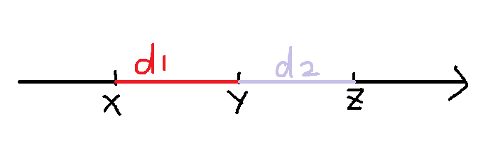
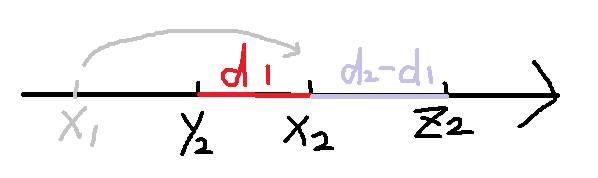
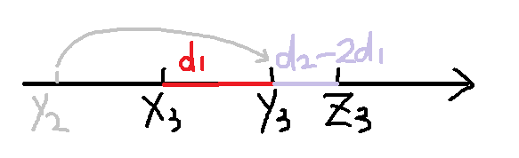

原文出处:本文由博客园博主Friday_Z提供。
原文连接:https://www.cnblogs.com/FridayZ/p/11847060.html
原文连接:https://www.cnblogs.com/FridayZ/p/11847060.html
题目大意：
在一条数轴上进行跳跳棋游戏。棋子只能摆在整点上。每个点不能摆超过一个棋子。用跳跳棋完成：棋盘上有3颗棋子，分别在a，b，c这三个位置。我们要通过最少的跳动把他们的位置移动成x，y，z。
跳动的规则：任意选一颗棋子，对一颗中轴棋子跳动。跳动后两颗棋子距离不变。一次只允许跳过1颗棋子。如果可以完成输出YES以及所需步数，如果不行输出NO即可。
对，只允许跳过一颗棋子（因为这个想了好久自闭了）
看完题目之后第一反应是不是：woc这什么，跟LCA有什么关系？？这哪来的树？？
那就对了（%dalao）
分类讨论，发现对于每一种合法的状态（也就是没有棋子重合）只有三种情况能走
1.中点（y）向左边跳
2.中点（y）向右边跳
3.左边（或者右边）往中间跳 =>可以证明由于只能跳过一颗棋子，在d1!=d2时只能走一个
这好像有点像二叉树？（将1.2看做子节点，3看做父亲节点）
对于1.2情况，我们可以发现（以下以1为例）：



可以知道，d1>d2时左边的棋子不能跳了，我们最多走d2/d1步，此时d2小于d1了换个方向走，当d2%d1等于0时走d2/d1-1步就到根了。
所以根据这个，我们可以求出开始状态与结束状态的祖先，判断他们的祖先是否相等 =>因为祖先相同就可以通过相反操作得到
这个操作模拟一下就好了，我们可以用除来加快跳(（一个个跳会超时的）
模拟部分：


1 int d1=y-x;
2 int d2=z-y;
3 if(d1<d2)
4 {
5 int step=d2/d1;
6 if(d2%d1==0) step--;
7 if(step>dis) step=dis;
8 x+=step*d1;
9 y+=step*d1;
10 if(x>y) swap(x,y);
11 dis-=step;
12 }
13 else
14 {
15 int step=d1/d2;
16 if(d1%d2==0) step--;
17 if(step>dis) step=dis;
18 z-=d2*step;
19 y-=d2*step;
20 if(z<y) swap(z,y);
21 dis-=step;
22 } 找到了公共祖先之后就可以二分查找（查找往上跳的步数）
l是0，r是min(结果与公共祖先的距离，起点与公共祖先的距离)
1 int l=0,r=min(dep1,dep2),step=0;
2 while(l<=r)
3 {
4 int mid=l+r>>1;
5 b1=go(st,mid);
6 b2=go(ed,mid);
7 if(pd(b1,b2)) step=mid,r=mid-1;
8 else l=mid+1;
9 } 以上是我认为的核心内容（看不懂就感性理解一下）
1 #include<iostream>
2 #include<cstdio>
3 using namespace std;
4 struct node{
5 int x,y,z;
6 }st,ed,b1,b2;
7 int dep1,dep2;
8 inline int read(){
9 char ch;
10 int sign=1;
11 while((ch=getchar())<'0'||ch>'9')
12 if(ch=='-') sign=-1;
13 int res=ch-'0';
14 while((ch=getchar())>='0'&&ch<='9')
15 res=res*10+ch-'0';
16 return res*sign;
17 }
18 inline void sort(node &x){
19 if(x.x>x.y) swap(x.x,x.y);
20 if(x.x>x.z) swap(x.x,x.z);
21 if(x.y>x.z) swap(x.y,x.z);
22 }
23 inline int findfather(node &b){
24 int res=0;
25 sort(b);
26 while(b.x+b.z!=b.y*2)
27 {
28 int d1=b.y-b.x;
29 int d2=b.z-b.y;
30 if(d1<d2)
31 {
32 int step=d2/d1;
33 if(d2%d1==0) step--;
34 b.x+=step*d1;
35 b.y+=step*d1;
36 if(b.x>b.y) swap(b.x,b.y);
37 res+=step;
38 }
39 else
40 {
41 int step=d1/d2;
42 if(d1%d2==0) step--;
43 b.z-=step*d2;
44 b.y-=step*d2;
45 if(b.y>b.z) swap(b.y,b.z);
46 res+=step;
47 }
48 }
49 return res;
50 }
51 inline bool pd(node x,node y){
52 if(x.x==y.x&&x.y==y.y&&x.z==y.z) return true;
53 return false;
54 }
55 inline int abs(int x){
56 return x>=0?x:-x;
57 }
58 inline node go(node b,int dis){
59 sort(b);
60 while(dis)
61 {
62 int d1=b.y-b.x;
63 int d2=b.z-b.y;
64 if(d1<d2)
65 {
66 int step=d2/d1;
67 if(d2%d1==0) step--;
68 if(step>dis) step=dis;
69 b.x+=step*d1;
70 b.y+=step*d1;
71 if(b.x>b.y) swap(b.x,b.y);
72 dis-=step;
73 }
74 else
75 {
76 int step=d1/d2;
77 if(d1%d2==0) step--;
78 if(step>dis) step=dis;
79 b.z-=d2*step;
80 b.y-=d2*step;
81 if(b.z<b.y) swap(b.z,b.y);
82 dis-=step;
83 }
84 }
85 return b;
86 }
87 int main(){
88 st.x=read();st.y=read();st.z=read();
89 ed.x=read();ed.y=read();ed.z=read();
90 sort(st);sort(ed);
91 b1=st;b2=ed;
92 dep1=findfather(b1);
93 dep2=findfather(b2);
94 if(!pd(b1,b2))
95 {
96 printf("NO\n");
97 return 0;
98 }
99 else
100 {
101 int c=abs(dep1-dep2);
102 if(dep1<dep2)
103 ed=go(ed,c);
104 else if(dep1>dep2)
105 st=go(st,c);
106 int l=0,r=min(dep1,dep2),step=0;
107 while(l<=r)
108 {
109 int mid=l+r>>1;
110 b1=go(st,mid);
111 b2=go(ed,mid);
112 if(pd(b1,b2)) step=mid,r=mid-1;
113 else l=mid+1;
114 }
115 printf("YES\n");
116 printf("%d",step*2+c);
117 }
118 return 0;
119 }